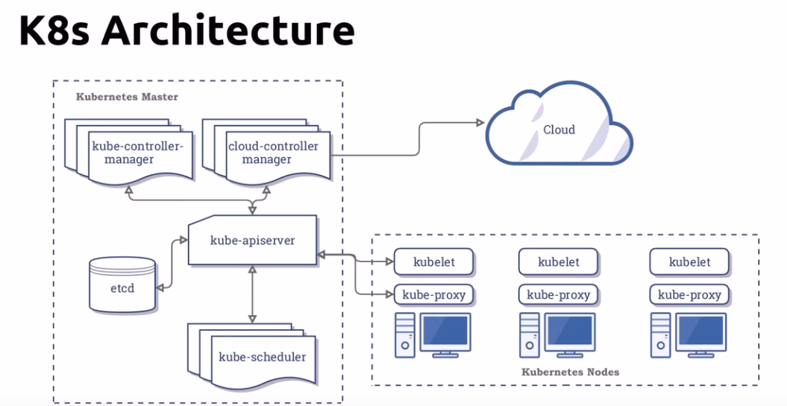

kube apiserver is the only point of communication between clusters; youn set deisired state in yaml file and use kube apis to set clusters to desired state
kubectl config delete-context [context name]